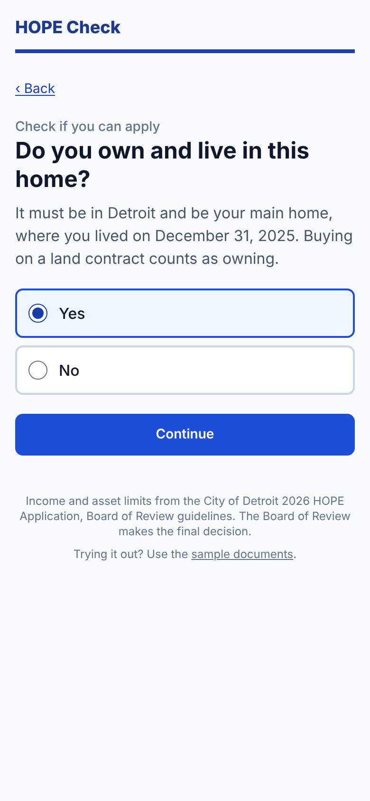
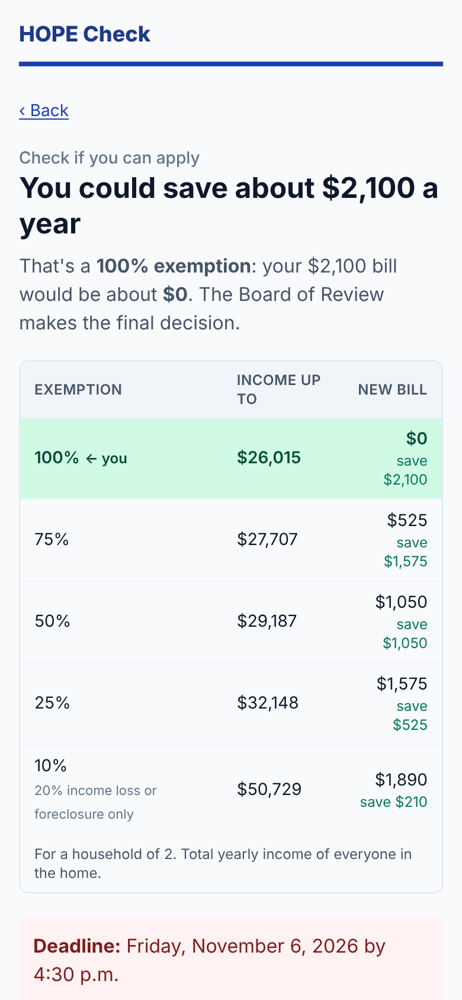
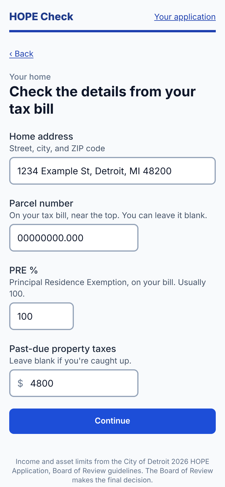
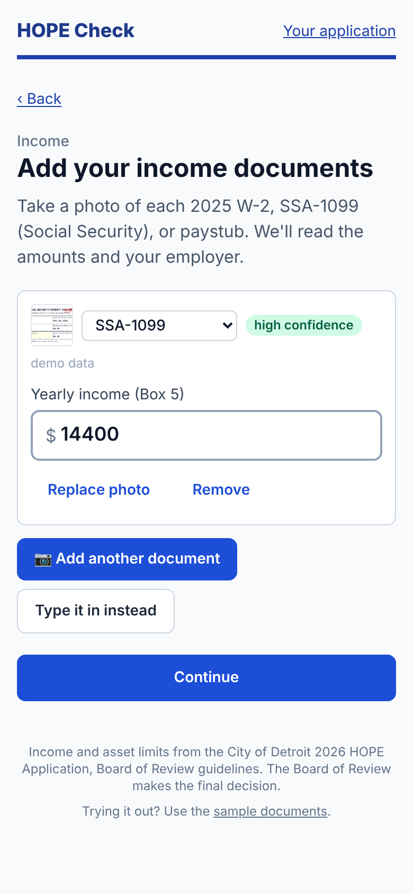
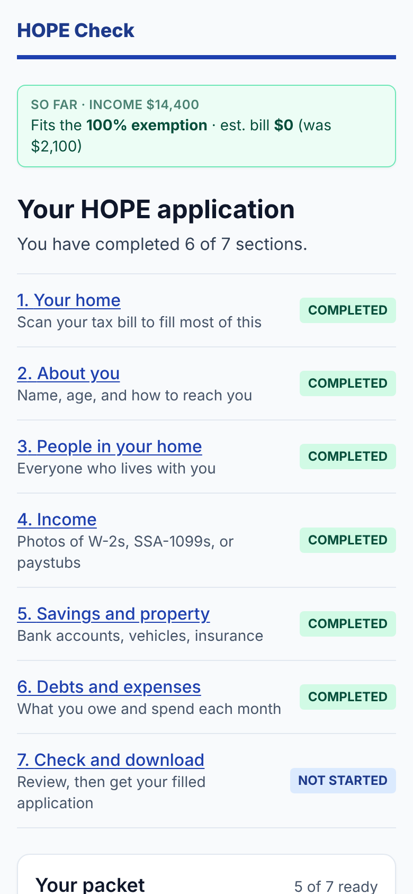
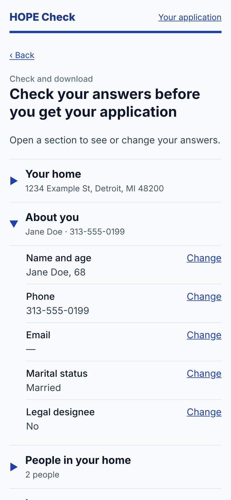
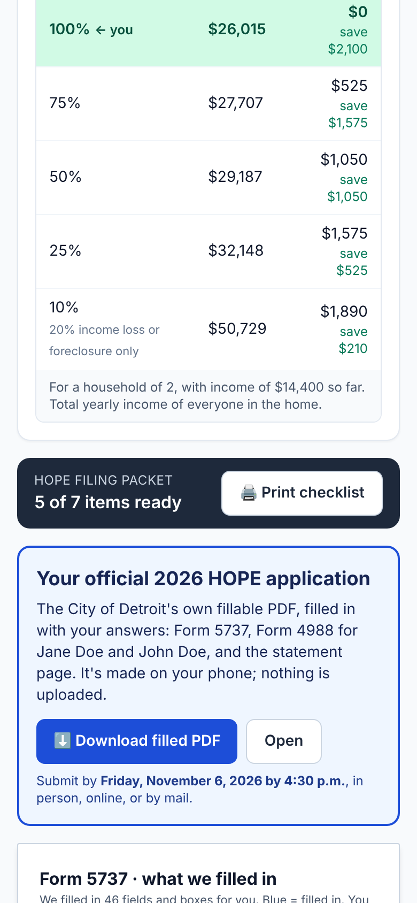
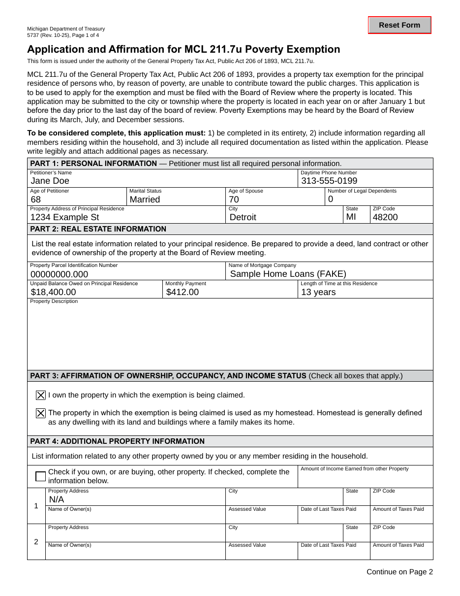

Apply for Detroit’s HOPE property tax exemption from a few photos.
1 / 7
Eligibility comes first, one question per page.

2 / 7
Limits from the City's 2026 HOPE guidelines.

3 / 7
Address, parcel number, PRE, and past-due taxes.

4 / 7
The model only reads documents. Tested rules decide.

5 / 7
Mortgage and bank statements are photos too.

6 / 7
Every section folds away; change anything.

7 / 7
The City’s own PDF. Signatures stay yours.


46 fields and boxes filled in for the demo household.
Nothing stored on a server.
github.com/sirsigmund79/hope-tax-relief